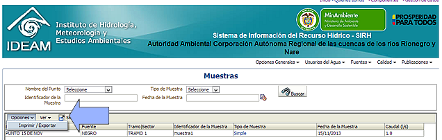

Esta sección le permite ver el listado consolidado de todas las muestras levantadas por su entidad. Observe que usted podrá hacer búsquedas por el Punto de monitoreo, identificador de una muestra, Tipos de muestras y fecha del muestreo.
El listado de resultados o tabla podrá ser empleado para ordenar la información de acuerdo a la columna de su interés, y podrá exportar los datos a una hoja de Excel haciendo uso del menú secundario "Opciones", "Imprimir / Exportar"
